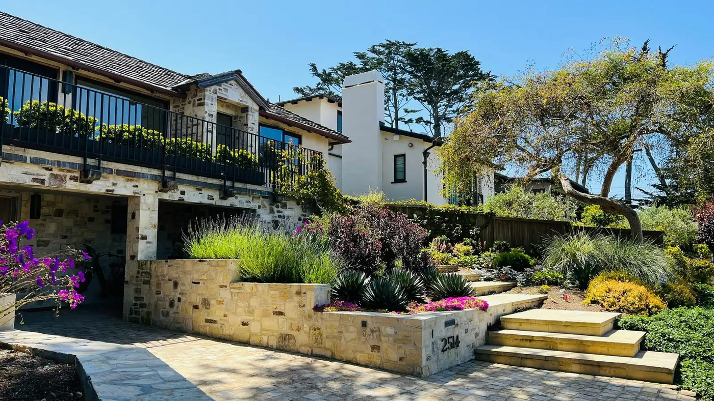

Vista
13.8 miles south

North County San Diego
What to know about Fallbrook before you buy a home here.
Neighborhoods
Fallbrook is an unincorporated community, so the County's community plan names its areas. Here is what the plan names, from the village outward.
The Village
The original downtown, once the home of three packing plants, and today where the Village Association keeps Vince Ross Square at Main Avenue and Alvarado Street.
A park in the middle of town and a linear park with a pathway connecting south and north Fallbrook, both named in the County's plan.
A specific plan area of 162.9 acres east of South Mission Road and Pepper Tree Lane, on land that was once farmed.
East of the Village
The County park at 2746 Reche Road, an oak forest with picnic areas and sports fields.
The County plan sets aside an I-15 Reche Road Area as a resource conservation area.
A Fallbrook Land Conservancy preserve just east of I-15, with a trail to the top.
Southeast
A specific plan area of 416.1 acres about six miles southeast of downtown, with Highway 76 on its south edge and I-15 on part of its northwest edge.
A smaller specific plan area on both sides of Highway 76, split by Pankey Road and Shearer Crossing.
A 389.5 acre specific plan area at the northeast corner of I-15 and Highway 76, next to the Palomar Community College District campus.
Named for Pala Mesa Heights Road in the Campus Park plan, and home to the Pala Mesa Golf Resort.
North and West
The County's Santa Margarita Preserve on De Luz Road, a river corridor with two miles of trails.
A neighboring community that the County's plan says has chosen to stay under the direct authority of San Diego County.
Marine Corps Base Camp Pendleton and the Naval Weapons Station lie immediately west of downtown.

Leticia's Picks
[Leticia: where she sends people for coffee, dinner and a walk.]
Living Here
The places people in Fallbrook go on a weekend.
Exhibitions and classes at 103 S. Main Avenue.
A museum, a barn and the Reche Schoolhouse at the Heritage Center, 1730 Hill Avenue.
An oak forest on Reche Road with picnic areas, playgrounds and a leash-free dog area.
Santa Margarita County Preserve
Trails for hikers, bikers and riders along the river, on De Luz Road.
Fallbrook Land Conservancy Trails
Preserves including Los Jilgueros in town and Monserate Mountain by I-15.
Maintains the Santa Margarita River trails, about 18 miles open to hikers, bikers and riders.
A local winery with a tasting room and a wine club.
The Chamber's festival downtown on Main Avenue.
Shopping and Dining
Galleries and shops along Main Avenue, with Vince Ross Square at Alvarado Street.
The market downtown on Main Avenue, listed on the Chamber's calendar.
The gift shop inside the Art Center on Main Avenue.
Red and white wines sold from the winery's own shop.
The library, at 124 S. Mission Road, sells gently used books.
The restaurant at Pala Mesa Golf Resort, named on the resort's own site.
For more places to eat, see the Chamber's Discover Fallbrook guide.
Schools
Two school districts serve Fallbrook, and the address decides which one. Confirm with the district before you buy.
Serves nearly all of the community, kindergarten to grade 8. District site.
Serves all of the community, grades 9 to 12. District site.
The Commute
Fallbrook has no train. It sits off Interstate 15, with a county bus line to Vista and Highway 76 running west to Oceanside.
Fallbrook to Vista via Mission Road, with stops at Fallbrook High School and the Community Resource Center.
Exit at Mission Road (exit 51) to reach Fallbrook.
From I-5 in Oceanside, take Highway 76 east to Mission Road, then north into Fallbrook.
Road miles from Main Avenue at Alvarado Street, without traffic.
Before You Buy
Check these on any home before you write an offer.
01
Check the address on the State Fire Marshal's map. Selling a home in a High or Very High zone needs a defensible space inspection, which North County Fire does in Fallbrook.
02
Many homes outside the village use septic, and the County plan limits new sewer for subdivisions. Ask the County about septic design records for the address.
03
Water comes from the Fallbrook Public Utility District, the Rainbow Municipal Water District, or a private well. Wells need a County permit and testing, so read the County's well page.
04
The County plan notes many private roads, some with maintenance agreements and some with none. Ask for the road maintenance agreement for the address, and see the Fallbrook Community Plan.

Your Fallbrook Agent
Tell Leticia which Fallbrook neighborhoods you are weighing, and she will go through each one with you.
The County's page for Fallbrook, which has no city government
The Chamber's guide to art, wineries, golf and nature
Downtown parks, events and projects on Main Avenue
Property records and tax information
Nearby